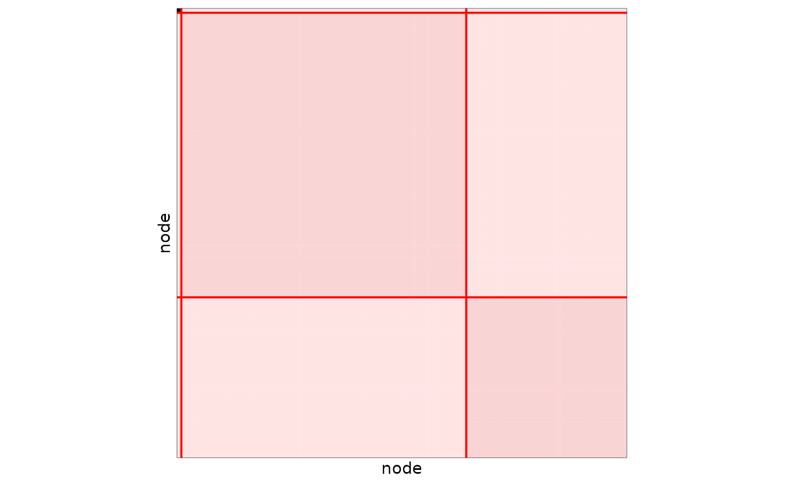
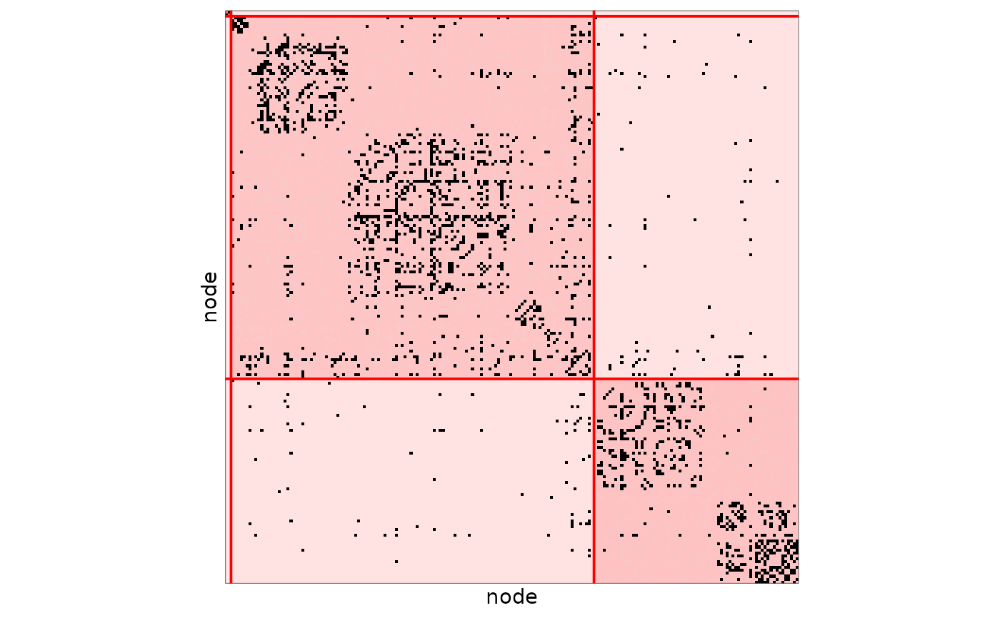
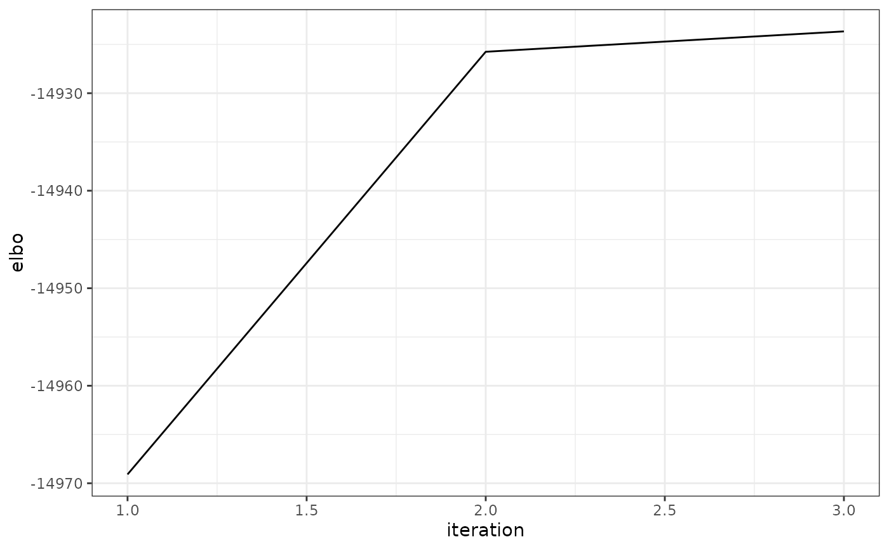

Plot function for the various fields of a missSBM_fit: the fitted
SBM (network or connectivity), and a plot monitoring the optimization.
Arguments
- x
an object with class
missSBM_fit- type
the type specifies the field to plot, either "imputed", "expected", "meso", or "monitoring"
- dimLabels
: a list of two characters specifying the labels of the nodes. Default to
list(row= 'node',col = 'node'))- ...
additional parameters for S3 compatibility. Not used
Examples
## a fit of the French political blogosphere, 30% of its dyads missing
adjMatrix <- missSBM::frenchblog2007 %>%
igraph::as_adjacency_matrix(sparse = FALSE) %>%
missSBM::observeNetwork(sampling = "dyad", parameters = 0.7)
collection <- estimateMissSBM(adjMatrix, 1:3, "dyad",
control = missSBM_param(trace = FALSE, iterates = 0))
myModel <- collection$bestModel
plot(myModel, "expected")

plot(myModel, "imputed")

plot(myModel, "monitoring")
